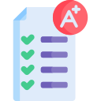

Wiki
É uma ferramenta que possibilita a criação coletiva, ou individual, de textos on-line
|
Permite a criação e edição de uma página web em que todos os estudantes podem atuar colaborativamente. |
Os estudantes podem colaborar escrevendo, editando e formatando documentos de texto, inserindo imagens e links. |
|

A ferramenta possibilita a produção individual e o compartilhamento de trabalhos para a orientação do professor. |
Produção Individual
É possível controlar o histórico das ações de cada estudante na atividade, permitindo a avaliação de produção individual. |
|
Vídeo Tutorial de Configuração e Aplicabilidade: |
Dicas de Uso
|